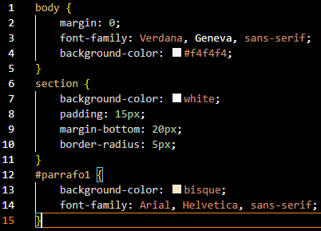

Concepto
CSS (Cascading Style Sheets) es un lenguaje utilizado para describir el estilo visual de una página web escrita en HTML. Permite definir cómo se verá cada parte del sitio, incluyendo colores, fuentes, márgenes, alineación, tamaños y distribución de los elementos.
Gracias a CSS podemos separar el contenido (HTML) de la presentación (estilo), facilitando la personalización y el mantenimiento del sitio web.
Ejemplo de lo que se puede hacer con CSS:
- Cambiar el fondo de una página.
- Estilizar textos con colores y fuentes personalizadas.
- Organizar elementos en columnas o filas.
- Agregar bordes, sombras y transiciones visuales.
- Hacer que el sitio se vea bien en diferentes tamaños de pantalla.
¿Qué necesitamos para aplicar estilos?
Para aplicar los estilos necesitamos un archivo CSS y etiquetas que dividan nuestro código, como body, div, section, main, etc. Además, debemos vincular el CSS usando la etiqueta <link>, así:
¿Cómo aplicar los estilos?
Dentro del archivo CSS, usaremos las etiquetas HTML como selectores. Así se aplica estilo a distintos elementos:
Etiquetas en CSS
body
El selector body aplica estilos al cuerpo completo del documento. Puedes cambiar el color de fondo, el tipo de letra, márgenes y más.
Ejemplo: body { background-color: #f4f4f4; }
header
Representa el encabezado de la página. En CSS se usa para cambiar colores, alineación de texto o aplicar márgenes y rellenos.
Ejemplo: header { background-color: #37474f; color: white; }
nav
Define la barra de navegación. Con CSS se puede cambiar el fondo, alinear enlaces, aplicar espacio entre ellos y efectos visuales.
Ejemplo: nav ul { display: flex; gap: 20px; }
main
Contiene el contenido principal de la web. En CSS se estiliza para agregar márgenes, espaciado interno y organización del contenido.
Ejemplo: main { padding: 20px; }
section
Sirve para dividir contenido en secciones temáticas. Con CSS puedes personalizar su fondo, bordes, espacios y sombras.
Ejemplo: section { background-color: white; border-radius: 5px; }
div
Es un contenedor genérico. Se usa comúnmente con CSS para dividir y posicionar elementos dentro de la página, se una un punto "." para usar la id de <div>.
Ejemplo: .contenido { display: flex; gap: 20px; }
footer
Representa el pie de página. En CSS puedes personalizar su fondo, color del texto, tamaño de fuente y espaciado.
Ejemplo: footer { text-align: center; padding: 15px; }
a
Código en CSS
body {
background-color: #f4f4f4;
font-family: Verdana, sans-serif;
margin: 0;
}
header {
background-color: #37474f;
color: white;
padding: 20px;
text-align: center;
}
nav {
background-color: #cfd8dc;
padding: 10px 0;
}
nav ul {
display: flex;
justify-content: center;
gap: 20px;
list-style: none;
margin: 0;
padding: 0;
}
nav a {
text-decoration: none;
color: #333;
font-weight: bold;
}
main {
padding: 20px;
}
section {
background-color: white;
padding: 15px;
border-radius: 5px;
margin-bottom: 20px;
}
footer {
background-color: #37474f;
color: white;
text-align: center;
padding: 15px;
}